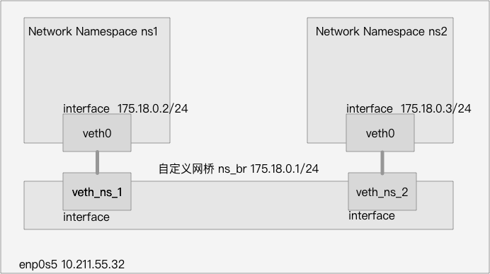
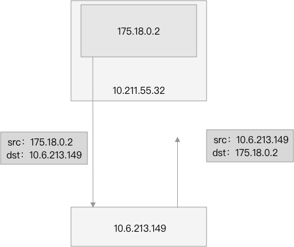
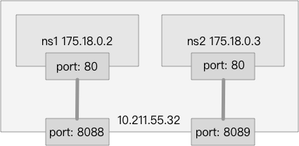
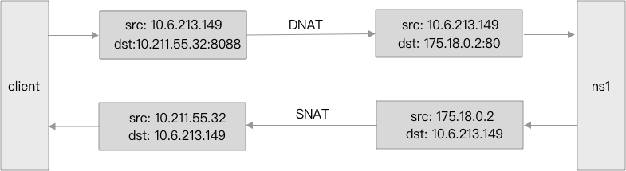
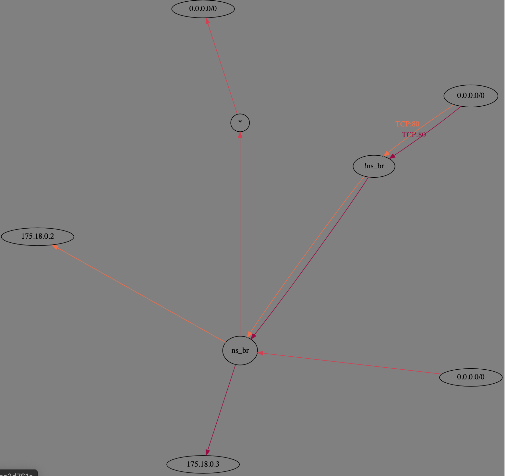

万恶的 iptables :-/

Docker 容器的网络如果设置为 bridge 模式，则那个容器就会拥有一个独立的网络命名空间（Network Namespace），一个新建的网络命名空间，其中只有一个为 DOWN 状态的 lo 网卡。
Docker 随后创建一对虚拟以太网卡（Virtual Ethernet），由于其是成对存在的，所以这种设备一般称为 veth pair 。在它的一端发送的数据会在另外一端接收，类似于Linux的双向管道。Docker 会创建一对 veth，将一个移至容器命名空间中，将另一个挂到 Docker 自己创建的网桥 docker0 上。
随后，对 iptables 进行相关的配置，就可以做到容器内部和外部的通信。
系统信息
本次实验将会按照上图所示的结构模拟 Docker 的 Bridge 网络模式，本机（运行在虚拟机中）配置信息如下：
- Ubuntu 16.04
- 内核 4.10.0-28-generic
- 连接外网网卡 enp0s5 10.211.55.32/24
Veth
首先，先处理 Network Namespace 1：
1 | # 创建 Network Namespace 1 |
其中， ip netns exec ns1 ... 表示进入 ns1 命名空间中做相关操作，此时，查看一下 ns1 中的网卡情况：
1 | sudo ip netns exec ns1 ip addr |
会有类似于如下的输出：
1 | 1: lo: <LOOPBACK,UP,LOWER_UP> mtu 65536 qdisc noqueue state UNKNOWN group default qlen 1000 |
对于 ns2 ，操作非常相似，这里就直接贴出代码，不做相关的注释了。
1 | sudo ip netns add ns2 |
Linux Bridge
网桥（bridge）虚拟设备用来桥接网络设备，相当于现实世界中的交换机，可以将网卡接到它上面。下面将留在默认命名空间中的两个虚拟网卡（veth_ns_1、veth_ns_2）接到自己创建的网桥上，并对网桥做相关的配置。
1 | # 创建一个网桥 |
此时，两个网络命名空间 ns1 和 ns2 就可以和网桥通信了，执行以下命令都是有效的：
1 | sudo ip netns exec ns2 ping 175.18.0.1 |
但是，它们之间是无法通信的，或许也有可能，这个就牵涉到 iptables 的问题了。
Linux iptables
之前提到，Linux Bridge 的作用就像是一个交换机，负责转发数据包，而 iptables 的职责之一就是过滤这些数据包。
为了保证转发功能开始，先确认如下的输出为1：
1 | cat /proc/sys/net/ipv4/ip_forward |
如果为 0，则输入如下命令开启
1 | sudo sysctl -w net.ipv4.conf.all.forwarding=1 |
iptables 有五个表（table），这里先查看 FILTER 表，输入如下命令查看
1 | iptables -t filter -n --list |
关注输出的这一部分
1 | Chain FORWARD (policy DROP) |
iptables 有五个链（chain），这里的 FORWARD 链用于处理转发到其他机器 / network namespace 的数据包，这里的默认 policy 为 DROP ，所以从 ns1 到 ns2 的数据包就会被丢弃。这里为了方便起见，先将它的 policy 设为 ACCEPT ，对数据包默认放行。
1 | iptables -t filter --policy FORWARD ACCEPT |
此时，两个网络命名空间之间以及和网桥之间网络都可以互通了
1 | ip netns exec ns1 ping -c 3 175.18.0.3 |
实验用的 Ubuntu 主机是运行在我笔记本电脑的虚拟机中的，我笔记本的ip为 10.6.213.149， 如果想从网络命名空间内 ping 10.6.213.149 是无法成功的，你也可以理解为无法 ping 外部的网络。这个和好理解，从 ns1 发送 ICMP 报文至 10.6.213.149 是可以成功的，此时报文的源地址为 175.18.0.2 。但是在 10.6.213.149 回复报文的时候，ICMP 报文的目的地址为 175.18.0.2，这个是一个内网的IP，所以数据包必然丢失。

希望的是在数据包离开 10.211.55.32 时，将源地址改为 10.211.55.32，这样子 10.6.213.149 就能正确返回报文了，而 iptables 的 NAT 表就是用来干这个的，它的主要功能是修改数据包的源和目的地址，命令如下
1 | iptables -t nat -A POSTROUTING -s 175.18.0.0/24 -j MASQUERADE |
POSTROUTING 链也为 iptables 的五个链之一，是用来做 SNAT （源地址转换的），而 MASQUERADE 策略是：报文从哪个网卡出就用该网卡上的 IP 地址替换该报文的源地址，而在这里， 175.18.0.2 被 10.211.55.32 替换。 -A 表示 append，也就是向 NAT 表的 POSTROUTING 链追加设置，如果把 -A 换成 -D 则为删除此规则。-t 用于指定表（table）， -s 表示源地址， -j 表示 jump。
执行此命令后，就可以 ping 通 10.6.213.149 了
1 | ip netns exec ns1 ping -c 3 10.6.213.149 |
在两个网络命名空间 ns1 和 ns2 中各启动一个 http 服务器，都监听 80 端口，这里使用 python 作为服务器，命令如下
1 | ip netns exec ns1 python3 -m http.server 80 |
在 Ubuntu 中可以直接通过 175.18.0.2:80 和 175.18.0.3:80 来访问两个 http 服务器
1 | curl -I http://175.18.0.2 |
Docker 的 bridge 模式是将容器中的端口和物理机端口做了映射，这个映射使用 iptables 实现的，下面我们也实现一个端口映射，规则如下：

对 iptables 做如下的配置
1 | iptables -t nat -A PREROUTING -p tcp --dport 8088 -j DNAT --to 175.18.0.2:80 |
和之前一样，也是对 iptables 的 NAT 表做设置，但是这里是对 PREROUTING 链做设置，做 DNAT （目标地址转换）。此时，从虚拟机外就可以直接使用 Ubuntu的 IP 访问两个服务了。
1 | curl -I http://10.211.55.32:8088 |
这里列举访问 ns1 的流程：

之前对 FILTER 表设置的有些简略，这里再详细地配置一下，首先，将 FORWARD 链的默认策略该回来，默认为 DROP：
1 | iptables -t filter --policy FORWARD DROP |
之后进行如下配置：
1 | iptables -t filter -A FORWARD -i ns_br -j ACCEPT |
-i 表示接收数据包的网卡，而 -o 表示发送数据包的网卡。
第一行命令规定了转发给 ns_br 网卡的数据包一律放行。第二行命令规定了由 ns_br 网卡转发给 175.18.0.2:80 且不是由 ns_br 网卡发送的数据包给 一律放行（emm，有点绕，下面这张示意图可能更形象），第三行同理类似。

注意，由于这里限制了从 ns_br 网卡出来的流量，所以以及无法从 ns1 或 ns2 中 ping 外网了，如果希望可以从容器内部想外部发起icmp等非tcp请求，则添加如下配置
1 | iptables -t filter -A FORWARD -o ns_br -j ACCEPT |
目前还无法支持从本地用 127.0.0.1 访问，也不支持在本地用主机 ip 直接访问，满足后者需求可以执行如下命令，前者目前未找到解决方案：
1 | iptables -t nat -A OUTPUT ! -d 127.0.0.0/8 -m addrtype --dst-type LOCAL -p tcp --dport 8088 -j DNAT --to-destination 175.18.0.2:80 |
查阅网上资料后，一种说法是 iptables 无法直接操作 lo 接口的流量
介绍两个查看 iptables 的方式（以查看 NAT 表为例 ）
1 | # 按照不同链（chain）显示 |
参考
- 《自己动手写Docker》
- 《Kubernetes网络权威指南》